How To Create A Fancy Portal Effect In Unity
Expectations
Recently I created a portal particle system in Unity for a game that I am developing. I am really pleased with the result and I want to share with you how to create one yourselves. Here is the final effect that we will be making today.
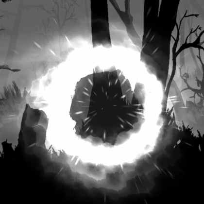
What do we need
We need four textures.
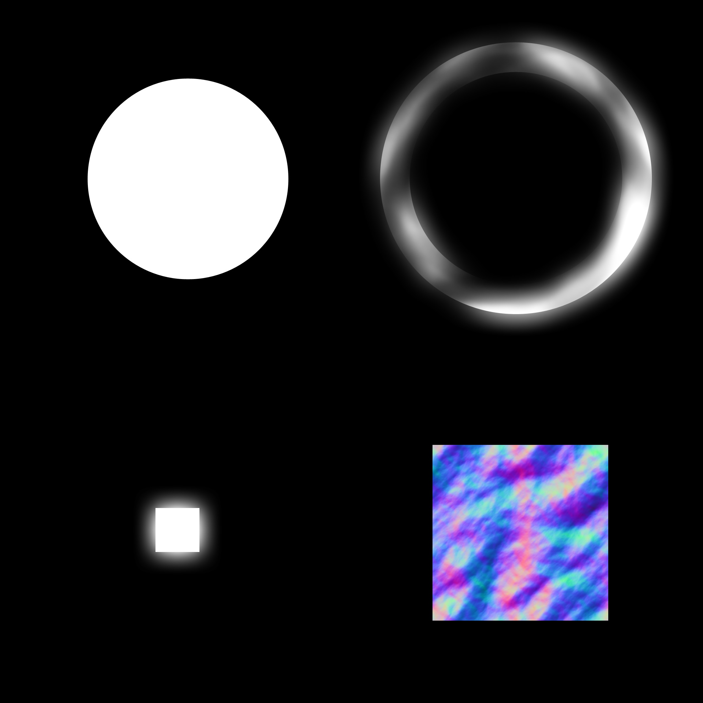
{kind=link}
{kind=link}
{kind=link}
{kind=link}
With the first 3 we are going to create the particle system itself, which consists of 5 sub-particle systems. With the noise texture (the one with RGB colors) we are going to distort each sub-system to achieve the final result.
We are also going to need 2 custom shaders — Additive and Multiplicative Particle Distortion Shaders. They are very cheap and optimized especially for mobile devices. The game I am working on is a mobile game after all.
Here is the Additive Shader.
Shader "Custom/Mobile/Particles/Additive Distortion" {
Properties{
_MainTex("Main Texture", 2D) = "white" {}
_NoiseTex("Noise Texture", 2D) = "white" {}
_IntensityAndScrolling("Intensity (XY), Scrolling (ZW)", Vector) = (0.1,0.1,0.1,0.1)
}
SubShader{
Tags {
"IgnoreProjector" = "True"
"Queue" = "Transparent"
"RenderType" = "Transparent"
}
Pass {
Blend One One
ZWrite Off
CGPROGRAM
#pragma vertex vert
#pragma fragment frag
#include "UnityCG.cginc"
uniform sampler2D _MainTex;
uniform sampler2D _NoiseTex;
uniform float4 _MainTex_ST;
uniform float4 _NoiseTex_ST;
uniform float4 _IntensityAndScrolling;
struct VertexInput {
float4 vertex : POSITION;
float2 texcoord0 : TEXCOORD0;
float2 texcoord1 : TEXCOORD1;
float4 vertexColor : COLOR;
};
struct VertexOutput {
float4 pos : SV_POSITION;
float2 uv0 : TEXCOORD0;
float2 uv1 : TEXCOORD1;
float4 vertexColor : COLOR;
};
VertexOutput vert(VertexInput v) {
VertexOutput o;
o.uv0 = TRANSFORM_TEX(v.texcoord0, _MainTex);
o.uv1 = TRANSFORM_TEX(v.texcoord1, _NoiseTex);
o.uv1 += _Time.yy * _IntensityAndScrolling.zw;
o.vertexColor = v.vertexColor;
o.pos = mul(UNITY_MATRIX_MVP, v.vertex);
return o;
}
float4 frag(VertexOutput i) : COLOR {
float4 noiseTex = tex2D(_NoiseTex, i.uv1);
float2 offset = (noiseTex.rg * 2 - 1) * _IntensityAndScrolling.rg;
float2 uvNoise = i.uv0 + offset;
float4 mainTex = tex2D(_MainTex, uvNoise);
float3 emissive = (mainTex.rgb * i.vertexColor.rgb) * (mainTex.a * i.vertexColor.a);
return fixed4(emissive, 1);
}
ENDCG
}
}
FallBack "Mobile/Particles/Additive"
}And the Multiplicative Shader.
Shader "Custom/Mobile/Particles/Multiply Distortion" {
Properties{
_MainTex("Main Texture", 2D) = "white" {}
_NoiseTex("Noise Texture", 2D) = "white" {}
_IntensityAndScrolling("Intensity (XY), Scrolling (ZW)", Vector) = (0.1,0.1,0.1,0.1)
}
SubShader{
Tags {
"IgnoreProjector" = "True"
"Queue" = "Transparent"
"RenderType" = "Transparent"
}
Pass {
Blend DstColor Zero
ZWrite Off
CGPROGRAM
#pragma vertex vert
#pragma fragment frag
#include "UnityCG.cginc"
uniform sampler2D _MainTex;
uniform sampler2D _NoiseTex;
uniform float4 _MainTex_ST;
uniform float4 _NoiseTex_ST;
uniform float4 _IntensityAndScrolling;
struct VertexInput {
float4 vertex : POSITION;
float2 texcoord0 : TEXCOORD0;
float2 texcoord1 : TEXCOORD1;
float4 vertexColor : COLOR;
};
struct VertexOutput {
float4 pos : SV_POSITION;
float2 uv0 : TEXCOORD0;
float2 uv1 : TEXCOORD1;
float4 vertexColor : COLOR;
};
VertexOutput vert(VertexInput v) {
VertexOutput o;
o.uv0 = TRANSFORM_TEX(v.texcoord0, _MainTex);
o.uv1 = TRANSFORM_TEX(v.texcoord1, _NoiseTex);
o.uv1 += _Time.yy * _IntensityAndScrolling.zw;
o.vertexColor = v.vertexColor;
o.pos = mul(UNITY_MATRIX_MVP, v.vertex);
return o;
}
float4 frag(VertexOutput i) : COLOR {
float4 noiseTex = tex2D(_NoiseTex, i.uv1);
float2 offset = (noiseTex.rg * 2 - 1) * _IntensityAndScrolling.rg;
float2 uvNoise = i.uv0 + offset;
float4 mainTex = tex2D(_MainTex, uvNoise);
float3 emissive = lerp(float3(1,1,1), mainTex.rgb * i.vertexColor.rgb, mainTex.a * i.vertexColor.a);
return fixed4(emissive, 1);
}
ENDCG
}
}
FallBack "Mobile/Particles/Multiply"
}As you can see, they are almost exactly the same. The difference is only in the blending and the calculation of the emissive color in the fragment function.
Step By Step
First we are going to make the particle system with the built-in mobile additive and multiplicative shaders, and then we are going to add distortion with our custom shaders. I want to do this, so you can see how big the difference is.
Background
Using an additive shader we start by emitting a single particle with the first texture. The exact color is “FFFFFF4B”. It should look like this.
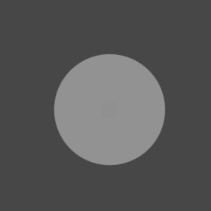
Nice start huh?
Black Hole
Yeah, you hear right. We are going to create a black hole.
By using a multiplicative shader we are going to emit a single smaller black circle
over the white one. The exact color is “000000AF”. Something like this.
Rotating Frame
Next using an additive shader and the second texture we emit 3 circles — each with different start rotation and angular velocity. The exact color is “FFFFFF80”. It looks like this.
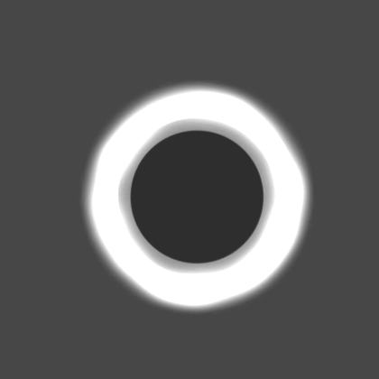
Pulsing Circles
Again using an additive shader and the second texture we start emitting pulsing circles from the center towards the frame. Each circle has different start rotation and no angular velocity. The rate is 3 particles per 2 seconds. Again the color of each circle is “FFFFFF80”.
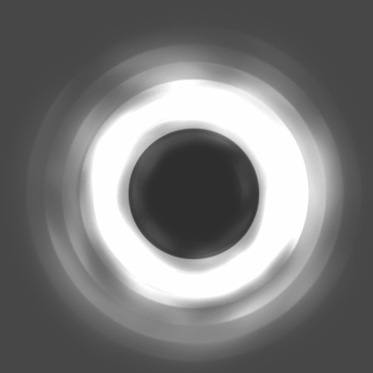
Small Sucked Particles
Using an additive shader and the third texture we add small particles that are sucked into the portal. Again the color is “FFFFFF80”.
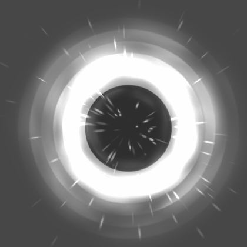
Adding Distortion
The only thing that's left is adding distortion to each sub-particle system with our custom additive and multiplicative shaders and the noise texture. The only thing we don't distort are the sucked particles.
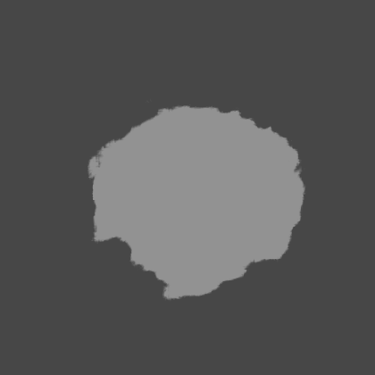
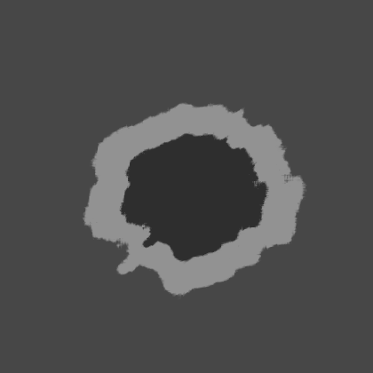
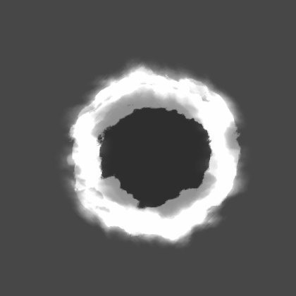
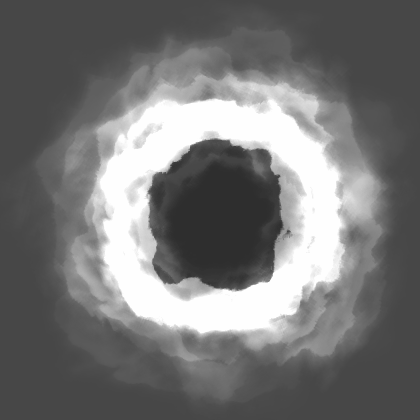
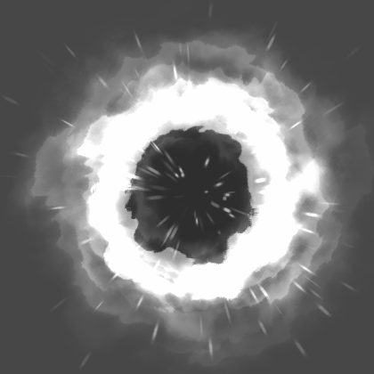